قراءة في الميزانية العامة للدولة
ماذا تعني ميزانية ٢٠٢٧
للقطاع غير الربحي؟
+١٨٫٩مليار ريالمشاريع «سخاء» في ٢٠٢٦
+٢مليون متطوعمستهدف ٢٠٢٧
−٣٪الإنفاق العاممن ١٤٣٦ إلى ١٣٩٢ مليار ريال
ثلاث دلالات للمنظمات غير الربحية
١رفع مساهمة القطاع في الناتج المحلي
وتمكينه من تقديم الخدمات الاجتماعية والإسهام في الدعم السكني
٢الدعم يتجه إلى الأكثر استحقاقًا
وقيمة المنظمة في التكامل مع منظومة الحماية الاجتماعية
٣الكفاءة وقياس النتائج معيار التمويل
الأولوية للبرامج التي تعرف تكلفتها وتثبت أثرها
المنظمات غير الربحية التي تبني استدامتها المالية الآن، لا التي تنتظر الدعم، هي من ستقود المرحلة القادمة.